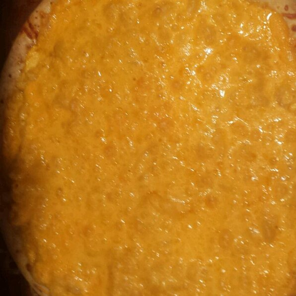

Mac and Cheese Pizza

Description
A cheese pizza with macaroni and extra cheese
Ingredients
- 1 (12 inch) pre-baked pizza crust
- ¾ cup cavatappi (corkscrew macaroni)
- ⅔ (16 ounce) jar cheese sauce (such as Ragu® Double Cheddar), divided, or as needed
- 1 tablespoon butter
- salt and ground black pepper to taste
- ½ cup shredded Cheddar cheese
Steps
- Preheat oven to 450 degrees F (230 degrees C). Place pizza crust on a baking sheet.
- Bring a small pot of lightly salted water to a boil. Cook cavatappi in the boiling water, stirring occasionally, until cooked through but firm to the bite, 10 to 11 minutes. Drain and return pasta to the pot.
- Stir 1/2 the cheese sauce and butter into the cavatappi pot over medium heat until butter is melted and pasta-cheese mixture is combined. Season with salt and pepper.
- Spread a thin layer of cheese sauce over the pizza crust. Sprinkle shredded Cheddar cheese over the cheese sauce onto the crust. Pour pasta-cheese mixture over the Cheddar cheese, and top with another 1/2 the cheese sauce.
- Bake pizza in the preheated oven until golden and bubbling, 8 to 10 minutes. Let rest for 2 minutes before slicing.